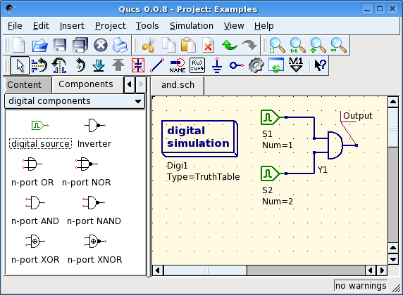

- Qucs -
Simulador de Circuitos Completamente Universal
Começando com
Simulações Digitais
Qucs também é uma interface gráfica para executar simulações digitais.
Este documento irá lhe dar uma breve descrição de como usá-la.
Para simulações digitais Qucs utiliza o programa FreeHDL
(http://www.freehdl.seul.org).
Assim, o pacote FreeHDL como também o compilador GNU C++ devem estar instalados
no computador.
Não há grandes diferenças em se executar uma simulação analógica ou uma
digital. Tendo lido Começando com
Simulações Analógicas, fica fácil ter uma simulação digital funcionando.
Vamos calcular a tabela verdade de uma simples porta lógica AND.
Selecione a classe "componentes digitais" da aba componentes no
lado esquerdo e monte o circuito mostrado na figura 1. O bloco de
simulação digital pode ser encontrado entre os outros blocos de simulação.
As fontes digitais S1 e S2 são as entradas, o nó rotulado
como Output é a saída. Após executar a simulação, a página de
exibição de dados abrirá. Coloque o diagrama tabela verdade nela
e adicione a variável Output. Agora, a tabela verdade de uma porta AND
de duas entradas é mostrado. Parabéns, a primeira simulação digital
terminou!

Figura 1 - Janela principal do Qucs
Tabela verdade não é a única simulação digital que o Qucs pode efetuar.
Também é possível aplicar um sinal arbitrário ao circuito e visualizar
o sinal de saída em um diagrama de tempo. Para fazer desta forma, o parâmetro Tipo
do bloco de simulação deve ser mudado para TimeList e a
duração da simulação deve ser inserido no próximo parâmetro.
As fontes digitais tem agora um comportamento diferente: Elas podem gerar uma
sequência aleatória de bits apenas definindo o primeiro bit (baixo ou alto) e
uma lista que define os instantes até a nova mudança de estado. Note que esta
lista se repete após o seu fim. Então, para criar um clock de 1GHz com
razão de pulsos de 1:1, a lista escreve: 0.5ns; 0.5ns
Para exibir os resultados desse tipo de simulação, há o diagrama
diagrama de tempo. Aqui, os resultados de todas os nós de saídas podem ser exibidos
linha por linha em um diagrama. Então, vamos nos divertir...
Componente em arquivo VHDL
Simulações mais complexas e mais universais podem ser executadas usando o
componente "arquivo VHDL". Este componente pode ser encontrado na lista de componentes (seção "componentes digitais"). Todavia, o uso recomendado é o seguinte: O arquivo VHDL deve ser membro do projeto.
Então, vá até o visualizador de lista de conteúdo e clique no nome do arquivo. Após entrar
na área de esquema elétrico, o componente VHDL pode ser colocado.
O último bloco entidade no arquivo VHDL define a interface, isto é, todas as portas de
entrada e saída devem ser declaradas aqui. Essas portas também serão mostradas pelo
símbolo no esquema elétrico e podem ser conectadas ao resto do circuito. Durante
a simulação, o código fonte do arquivo VHDL é colocado no nível mais alto
do arquivo VHDL. Isto deve ser considerado como causa de algumas limitações. Por
examplo, o nome das entidades dentro do arquivo VHDL devem ser diferentes dos nomes
já dados para subcircuitos. (Após a simulação, o código fonte completo pode
ser visto pressionando-se F6. Use-o para adquirir um sentimento por este tipo de procedimento.)
voltar ao topo